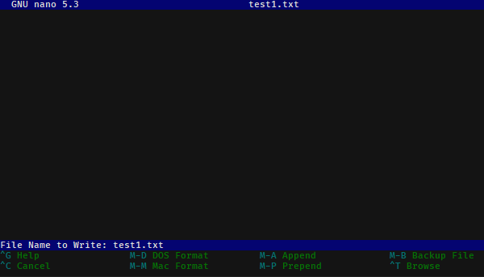

On Terminals and Shells¶
Motivation¶
Knowing the basics of using a command line interface is occasionally helpful. While a lot of software has nice GUI interfaces, making these interfaces takes a large amount of work. Software written by a small number of people (like research groups!) often are only accessible via a CLI. In many cases, a command line interface can also be a faster way to do certain operations.
Even if you avoid using a terminal in daily computing, a terminal is often the only way that you can access high performance computing clusters.
The basics¶
Lots of words get thrown around: CLI, terminals, bash, shells, command prompts. For these purposes:
A terminal is the program that runs on your computer and handles all of the low-level input output details. It is responsible for drawing to the screen, getting keyboard input, handling the clipboard, selecting fonts, and so on.
Common terminals might be the programs Terminal or iTerm2 on MacOS or Windows Terminal, Powershell, and Command prompt on Windows (more on this later).
A shell is a command-line program (e.g. instead of interacting with us through a graphical interface, you type stuff in line by line) that lets the user take actions like modify files, view program output, run other command-line programs, and so on.
Inside a terminal, you run a shell. Somewhat confusingly, the default terminals on both MacOS and Windows run a default shell, so that the shell and terminal appear identical.
Common Unix shells (runnable on MacOS and Linux) are the original shell,
sh, along withbash(common default on Linux),zsh(recent default on MacOS), and others likecshanddash. The two major Windows shells arecmd(old-school, going back to DOS) andpowershell(Windows’ modern shell).
{kind=link}
When a shell starts it, it displays a prompt, showing that it is ready for input. Once you are done typing in your command, you hit enter to run that command.
When you run a command line program, the shell will show the prompt again when it’s ready for more input.
In these notes, we will use $ to represent generic prompts (and > for the default Powershell prompt);
lines without the $ are example output of what you will see when you enter the command.
When typing in commands, you should not type in the dollar sign! Your specific shell may display
a more complicated prompt than a dollar sign, such as showing the current directory that you are currently
in.
An example is:
$ echo "test"
test
If we have an operating-system specific command to show, we’ll show them in specific
boxes, and we’ll use the Powershell prompt symbol > for the Powershell examples.
$ echo "test"
test
> echo "test"
test
Finally, throughout this we will talk about files and directories. Directories are more commonly known as folders, but directory is the common shell terminology, so will be used here for consistency. However, saying folder is totally fine unless someone is being really pedantic.
Commands¶
In a shell, you enter commands to run them. When processing a line, the line you entered is first separated by the spaces present. Consecutive spaces are treated as a single space, with text in quotes being represented as a single “word”.
Then, the first word is taken as the command name, and looked up in the list of installed
command-line programs (e.g. see if it is present in PATH). The rest of the line is
given to that program as it’s command line arguments.
By convention, command line arguments that start with dashes are normally options. By convention, these options typically either have long names and start with two dashes, or have a “shorthand” form with a single dash and a single letter. Arguments that don’t start with dashes are typically user-specified.
For example, in the following commands:
$ git commit --message "Testing out a commit"
$ git commit -m "Testing out a commit"
the command git is called in both cases, and is given the argument list:
(commit, --message, Testing out a commit) in the first case or
(commit, -m, Testing out a commit) in the second. These two calls
are identical in this case, because -m is shorthand for --message.
Demo
For the command line commands:
$ python -m venv env
$ git add testing.py module.py "explanation revised.docx"
what command is called in each case? What arguments are given to that command?
Show/hide answer
In the first example, the program python is ran with arguments (-m, venv, env).
In the second example, the program git is ran with arguments (add, testing.py, module.py, explanation revised.docx).
Interface basics¶
While the shell is minimalistic, there are three features that make our life easier:
Job control: Pressing Control and C (notated as
Control-C,Ctrl-C, or^C) does not copy inside a terminal. Instead,^Cis the command to quit the actively running program. The program is given a chance to clean up after itself (e.g. this is like hitting the exit button in a program, not force-closing it).On Unix-derived systems (Linux and MacOS), you can additionally pause a running program by pressing
Ctrl-Z. When you pause the program, you will see[1]+ Stoppedand you will be back at the shell prompt. To resume the program, typefg(to bring the program back to the foreground.Clipboard: Because control-C does not copy, we need some other way of using the clipboard. On Mac, this is easy; copy and paste are typically bound to Command-C and Command-V. On Windows and Linux, it depends on what terminal you are using. A typical copy/paste solution binds the keyboard to right-click. On standard Powershell, you can select a region with your mouse and press enter to copy that to the clipboard. To paste, right click inside the terminal region.
Tab completion: Typing out full file names gets tiring, especially when you have long file names or deeply nested directory structures. Tab completion saves us: if you have a filename partially written, hitting
Tabattempts to auto-fill the rest of the name. If there is a single unique file that matches what you have typed so far, that name is filled. If there are multiple files that might match, then the exact behavior differs per shell. Bash and similar shells will typically complete as much of the name as possible, but then stop. If you double-tapTabin Bash, it will print a list of all possible matching files. In Powershell, pressingTabcycles between files that match.History: Retyping common commands also gets tiresome. You can access your command line history (e.g. the previous lines you have typed) by pressing the up and down arrows.
Starting off at home¶
When you first open a terminal, your shell will likely start off in your home directory, also known in shorthand
as ~. Each user has its own home directory. All of the user directories that you are used to accessing through
Windows Explorer or Finder, such as Desktop, Downloads, or Documents are subdirectories of your home directory.
The actual location of your home directory differs,
but is typically something like C:\Users\Username on Windows, /users/Username on MacOS, and
/home/Username on most Linuxes.
So that we don’t have to type that large thing every time, ~ is short-hand notation for whatever your home
directory is. That is, the location of your downloads folder could be written either as C:\Users\Username\Downloads
or more simply as ~\Downloads
Note
You may have noticed earlier that these directory paths have been written differently between the
two operating systems. In short, due to backwards compatibility, Windows uses the backslash \
as the path separator (written between directory names), whereas all Unix-derived operating systems
including MacOS and Android use the forward slash / as the path separator.
Most of the time you can just use the forward slash without worry; powershell on Windows will auto-convert
from forward slashes to backslashes if you use forward slashes, but when programming you should keep this in
mind and not manually use slashes when constructing paths to filenames. It still may work, but you should
ideally use filesystem-aware techniques, like using os.path or pathlib in Python.
The shell has a current location; imagine it as having a Finder/Explorer window open to some directory
on your computer. This current location is called the (current) working directory. This is
How do we know what directory we are in while using the shell? Our first command we will learn is pwd:
Command: pwd
pwd stands for print working directory, and does just that; it tells you what your current
location is, in full detail (e.g. the entire path, not in shorthand). If you ever get lost, just type pwd!
This output is similar across operating systems; it is a little more verbose in Powershell.
Example output right after launch, so that you are starting in your home directory:
$ pwd
/users/username
> pwd
Path
----
C:\Users\Username
If we want to know what is inside the current directory, we can use ls:
Command: ls
ls stands for list, and lists every file and directory inside the current working
directory.
If you were to run it in your home directory, you might get something like:
$ ls
Desktop Downloads Pictures
Documents Music Videos
If you want to see what is inside one of these directories, ls
takes command line arguments specifying which directory you’d like the view:
$ ls Documents
10-50 10-40 10-34
research
To view hidden files (on MacOS/Linux, these are files/directories that start with a period;
on Windows, these are files/directories with a hidden attribute set), we need to pass
ls a command line option. This differs between shells, but on bash/zsh/etc, you use --all or -a
to show hidden files as well:
$ ls -a
. Desktop Music Videos
.. Documents Pictures
.bashrc Downloads .profile
In Powershell, we pass the option -Force:
> ls -Force
Directory: C:\Users\username
Mode LastWriteTime Length Name
---- ------------- ------ ----
d--h-- 1/11/2021 7:19 PM .git
d----- 1/11/2021 7:19 PM Desktop
d----- 1/11/2021 7:19 PM Documents
d----- 1/11/2021 7:19 PM Downloads
d----- 1/11/2021 7:19 PM Music
d----- 1/11/2021 7:19 PM Pictures
d----- 1/11/2021 7:19 PM Videos
Moving away from home¶
To move what directory we are in, we can use cd:
Command: cd
cd stands for change directory, and switches the current working directory
to whatever directory you give it. This is the major way that you move around
the various directories to find files.
$ pwd # Start off in your home directory
/Users/username/
$ cd Downloads # move into the Downloads directory
$ pwd
/Users/username/Downloads
$ cd ~ # return the the home directory
$ pwd
/Users/username
Relative and absolute paths¶
The earlier examples have hinted at the existence of two types of paths/ways to reference files.
The first is using an absolute path; this is what we call specifying
the entire path from the filesystem “root” to the file of interest. On Windows,
this means paths like C:\Users\username\Downloads, where we specify the
drive followed by every path component.
On MacOS and Linux, absolute paths start at the root, which is the special
name given to the path /, so absolute paths look like /Users/username/Downloads.
In contrast, relative paths allow you to more concisely reference files and directories, as the paths are calculated relative to the current working directory.
It is fairly intuitive how this works for going into subdirectories; just specify the subdirectory name. To be able to reference directories “above” yourself in the tree, we need some way to reference these parent directories.
Luckily this is standardized; there are two special pseudo-directories accessible everywhere
on the filesystem; the ‘current directory’ . and the ‘parent directory’ ... The current directory
is always a sort of empty operation, but is useful if you want to run scripts in the same directory
as yourself.
When these are passed to a command, they are evaluated starting at the current working directory.
Say that we start off in our downloads directory, /Users/username/Downloads. Then changing directory
to relative directory .. means going one step “up”, to /Users/username
$ pwd
/Users/username/Downloads
$ cd ..
$ pwd
/Users/username
We can go up multiple layers at a time by combining these pseudo-directories together. For example,
to go up two directories to /Users from /users/username/Downloads, you could just write
cd ../...
You can actually combine absolute and relative paths; the parent directory .. will always
go “up” a directory, effectively removing what comes to the left if combined in this way. For example,
the paths /users/username and /users/username/Desktop/.. both point to the same thing.
Demo
If your shell starts in the Downloads directory /Users/amanda/Downloads, which of the following will
navigate to the directory /Users/amanda/data? /Users/amanda is your home directory. 2
cd .cd /cd /Users/amanda/datacd ../../cd home/datacd ../datacd ~/data
Show/hide answer
The 3rd, 6th, and 7th examples will navigate to the proper directory.
.will stay in the same directory,/Users/amanda/Downloads/is an absolute path to the filesystem root, not the correct directory./Users/amanda/datais the full absolute path to the desired directory, so this works.../../evaluates to/Users, the wrong directory.home/datawill give an error, as it tries to navigate to/Users/amanda/Downloads/home/data../dataevaluates to/Users/amanda/Downloads, the correct path.~/dataalso works, as~expands to/Users/amanda
File operations¶
Now that we can navigate around, we can learn file operations. The first is conceptually the simplest, as it creates a new directory:
Command: mkdir
mkdir stands for make directory. It creates a directory
name equal to that of the argument it gets passed.
$ pwd # Start off in the home directory
/Users/username/
$ cd test # try moving into the test directory; it fails!
cd: test: No such file or directory
$ mkdir test # Create the test directory
$ cd test # Now the cd succeeds
Importantly, mkdir on Linux/MacOS can only make a single directory by default,
so an error will occur if you try to create nested directories in one
command (e.g. if we want to create the directories test/inner_test
without first creating test, we’ll get an error). Powershell
does not have this limitation.
If we do want to create multiple nested directories, we can use the -p
or --parent flag to tell mkdir that it is allowed to create parent
directories if they don’t exist.
Now that we can create directories/folders, how do we actually move files around? Using mv!
Command: mv
mv stands for move, and takes at least two arguments.
We use mv to both move and rename files (renaming is just moving!).
The input arguments are mv <source> <destination>. Source can be
a single file/directory, or it can be multiple! However, if multiple
source files are given, then the given destination must be a directory!
Put another way, even thouhg there can be multiple source files/directories,
there can only be one destination.
If we want to rename a file we can do so with move:
$ ls
test.txt
$ mv test.txt old_test.txt
$ ls
old_test.txt
We can also rename directories in the same way:
$ mkdir test_dir
$ ls
test_dir
$ mv test_dir new_dir
$ ls
new_dir
If we want to move files, we can move them by naming them one by one. Consider
the case where we have several .txt files in a subdirectory. We can use a
wildcard to move everything matching a certain wildcard pattern:
$ ls
inner_dir
$ cd inner_dir
$ ls
test1.txt test2.txt test3.txt
$ mv test*.txt ../ # Move files to the parent directory (where we started)
$ ls # now there are no more files in inner_dir
$ cd ..
$ ls # but they are in the parent directory!
inner_dir test1.txt test2.txt test3.txt
Copying files is very similar to moving files. In fact, it has almost all of the same semantics: the one difference is in how you have to copy directories.
Command: cp
cp stands for copy and has the same cp <source> <destination> semantics as
move, except in the case of copying directories. The reason for this is even though it is
“free” (e.g. doesn’t take up extra disk space) to move directories, copying directories may involve
a very large amount of storage space, so you must confirm this action.
To copy directories, you need to use the -r flag, which stands for a recursive copy.
If you try to copy a directory in bash (Linux/MacOS) without -r, you’ll get an error:
$ ls
test_dir
$ ls test_dir
test1.txt
$ cp test_dir another_dir
cp: -r not specified; omitting directory 'test_dir'
If you try to copy a directory in Powershell (Windows), you won’t get an error, but the newly “copied” directory will be empty.
In both cases, add the -r flag to copy directories:
$ ls
test_dir
$ ls test_dir
test1.txt
$ cp -r test_dir another_dir
$ ls
test_dir another_dir
Our final command is what we use to delete files:
Command: rm
rm stands for remove, and it permanently deletes files!
There is no recycle bin; things get immediately deleted.
If you truly delete something important, then you’ll need to try various
data recovery techniques to get it back.
Much like cp, when deleting directories you need to add the -r (recursive)
flag. If you don’t, you’ll either get an error message (Linux, MacOS) or a confirmation
dialog (Windows).
$ ls
test_dir file1.txt file2.txt
$ rm file*.txt
$ ls
test_dir
$ rm -r test_dir
Editing and viewing files¶
The last part of this covers basic file editing. You’ll often be editing using some other GUI tool, but it’s helpful to know how to use a basic command-line editor, especially when viewing files on computing clusters.
To print out the contents of a file to the terminal, you can use the cat command:
Command: cat
cat stands for concatenate. While it can still be used to
combine multiple files together, it is more often used to print the contents
of a file to the screen.
$ ls
text_file.txt
$ cat text_file.txt
This is the file's contents!
How do we actually edit files? There are many different command-line editors, but the most
commonly installed ones are vi and nano, which typically both come preinstalled on
Linux and MacOS. nano is much more user-friendly; vi and its predecessor vim
are often much faster at day-to-day typing, but come with a steep (vertical?) learning curve.
Note
Windows comes without a command line text editor installed. If you have installed Git though,
we can adjust your Powershell profile to have access to nano. Assuming Git has been installed
to the default location you can do the following in Powershell:
> Set-Alias nano 'C:\Program Files\Git\usr\bin\nano.exe'
> nano $profile
C:\Users\Username\Documents\WindowsPowerShell\Microsoft.PowerShell_profile.ps1
[ Read 1 lines (Converted from DOS format) ]
^G Help ^O Write Out ^W Where Is ^K Cut ^T Execute ^C Location
^X Exit ^R Read File ^\ Replace ^U Paste ^J Justify ^_ Go To Line
Once in the editor, type the line Set-Alias nano 'C:\Program Files\Git\usr\bin\nano.exe,
then press Ctrl-O (denoted ^O in the bottom menu), press enter, accepting the filename,
then press Ctrl-X to exit.
What this did was define what happens when you type nano; adding it to your profile script
means that every Powershell session you start will have access to nano.
When opening Nano, you’ll see the name of the file at the top. In the middle is your editing area; you can type and navigate around with arrow keys as you would expect.
If you want to just open a blank editor, you can just type nano. If you want to edit
a specific pre-existing file, then you can type nano filename.
At the bottom, you have a status bar that shows the available actions you can take. Here, control is
represented with ^, so ^X Exit means you can press Ctrl-X to close Nano.
The important features are Ctrl-X to exit, Ctrl-O to save (“write out”), Ctrl-W for
searching/find, and Ctrl-\ for find-and-replace.
When you go to save a file after editing, you will bring up a bottom bar prompting you to give a filename. If you want to save with the same name as you opened, you can just hit enter; it auto-fills the current name. Edit the name if you want to save under a different filename.
Finding things in documents¶
grep is the tool you should use when searching through files. It lets you
do basic searches and also regular-expression searches on one or multiple files.
Note
Windows also doesn’t come with grep preinstalled. Add an alias
to the Git-installed version as you did for nano:
> Set-Alias grep 'C:\Program Files\Git\usr\bin\grep.exe'
> nano $profile # Add the above line to your profile and save.
Command: grep
grep’s name comes from commands inside ed, one of the first
text editors ever created, where it means ‘global/regular expression/print’.
In short, it searches through entire files (global), using regular expressions as needed, and prints the search results it finds.
It’s syntax is:
grep <flags> <match_pattern> <files>
When run without arguments, grep attempts to find match_pattern anywhere in the given files.
Limited regualr expression syntax is supported in this mode.
Following the example in the Software Carpentries example,
consider searching through a file haikus.txt for the word not:
$ cat haikus.txt
The Tao that is seen
Is not the true Tao, until
You bring fresh toner.
With searching comes loss
and the presence of absence:
"My Thesis" not found.
Yesterday it worked
Today it is not working
Software is like that.
$ grep not haikus.txt
Is not the true Tao, until
"My Thesis" not found
Today it is not working
By default, grep returns any line that contains the given pattern.
If you want to use regex matching, you should pass the -E flag, but that
is beyond the scope here.
Other useful options are -w for “word” matching and -n for line numbers.
Let’s consider what happens if we search for the word is:
$ grep is haikus.txt
The Tao that is seen
"My Thesis" not found.
Today it is not working
Software is like that.
It returned the second line because ‘is’ occurs inside the word Thesis! Adding the
word flag forces grep to only match whole words:
$ grep -w is haikus.txt
The Tao that is seen
Today it is not working
Software is like that.
If we want to know more about where these lines were matched from, adding -n will
give line numbers corresponding to lines returned:
$ grep -w -n is haikus.txt
1:The Tao that is seen
10:Today it is not working
11:Software is like that.
Finally, by adding the -r, the recursive flag, you can tell grep to search entire folders!
Exercise¶
Time for an exercise to test all of this out! Partner up with someone if desired.
After downloading this zip file,
unzip it without looking inside the ``content`` directory! Then,
open up a terminal and get started! For some of the file manipulation tasks, there is a helper Python script
that can check if you have correctly completed parts of the exercise. Run it with python check.py.
Exercise
Do all of the following just in your terminal, without using GUI tools.
What directory did your terminal start in?
Where did you unzip the exercise directory to?
Use cd and ls to navigate into the content directory.
What is the directory layout of the
contentdirectory? You may want to draw out the directory tree.Are there any hidden folders?
In the
datadirectory, theimagingsubdirectory was accidentally placed inside thesequencingdirectory; move it out so it is next to thesequencingdirectory.Add your name to the
README.txtfile.In the
data/mixeddirectory, there is a mixture of.fastqand.tif, and.fcsfiles. Create a new directory,flow, and move these files into thesequencing,imaging, andflowdirectories, respectively. Delete thedata/mixeddirectory after everything has been moved out.In the
rawdirectory, there are mixed data files from several years. Create arawdirectory insidedata, then createYYYYdirectories for each year (e.g. 2020), sorting the mixed data files by copying them into the year directories.In the
primersdirectory, there are (hint: usegrep!). Which primers contain the repetitive sequence AAAA?
Show/hide answer
Will change per user.
Will also depend per user, but probably in their Download folder.
The directory layout is as follows:
content
│─ data
│ ├─ mixed
│ └─ sequencing
│ └─ imaging
│─ primers
│─ raw
│ │─ 2019.08.06_SlowFT_reprogram
│ └─ 2020-02-19-PEI-titration
└─ scripts
├─ .git
└─ env
There are hidden folders, the
scripts/.gitfolder.From inside
content, this can be done withmv data/sequencing/imaging data/, or other ways.This can be done with
nano README.txt.This can be done by using
mvwith a wildcard file specification. One solution is:
$ cd data
$ mkdir flow
$ mv mixed/*.fcs flow
$ mv mixed/*.tif imaging
$ mv mixed/*.fastq sequencing
$ rm mixed
This can again be done with a combination of
mkdirandmv, with file specifications like2020*.Starting from the
contentfolder:
$ cd raw
$ mkdir ../data/raw
$ mkdir ../data/raw/2019
$ mkdir ../data/raw/2020
$ mkdir ../data/raw/2021
$ cp -r 2019* ../data/raw/2019
$ cp -r 2020* ../data/raw/2020
$ cp -r 2021* ../data/raw/2021
The following primers have quadruple A’s in a row:
geec_primers.txt:oGE024 Rsites-UbC_fwd agtccagtgtCATCAACAAGTTTGTACAAAAAAG
nbw_primers.txt:GG_lenti_bb_fwd ACAGCGTCTCAtcctTAAAAGAAAAGGGGGGAC
nbw_primers.txt:GG_WPRE_fwd ACAGCGTCTCAttgcCGATAATCAACCTCTGGATTACAAAATT
nbw_primers.txt:link-NLS-VPR_rev gaaagctgggtctagatatcTCAAAACAGAGATGTGTCGAAGATGG
nbw_primers.txt:"mCherry-MCP-VP16_rev " gaaagctgggtctagatatcCTACAGCATATCCAGATCAAAATCGTC
nbw_primers.txt:Rsites_UbC_MCS_fwd tccagtttgggcatgcgctagcctcgagGCATCAACAAGTTTGTACAAAAAAG
nbw_primers.txt:VPR_rev gaaagctgggtctagatatcTCAAAACAGAGATGTGTC
sequencing_primers.txt:oSEQ046 phage-dest-upstream-seq CGACGTACTCCAAAAGCTCGAG
What directory did you unzip into?
- 1
MacOS image from https://ohmyz.sh/
- 2
Inspired by the Software Carpentry examples, license CC-BY-4.0
Extras¶
If you’d like to customize your shell prompt so it is more useful, you can use something called Oh my Posh 3.
For example, my terminal looks like this when logged into a remote server:
First, it shows a lock symbol because I’m connected over a secure connection, followed
by my username and the server name. In blue, the current working directory is shown. Finally,
it shows git status directly on the prompt line (here, we are on branch master with no changes).
Before installing this, make sure you have a powerline-enabled font (like Fira Code). Then, follow the installation instructions here. If you are on Windows, this is simple, just type:
> Install-Module oh-my-posh -Scope CurrentUser -AllowPrerelease
Then, create a JSON file with your desired prompt; you can do this with nano ~/.omp_prompt.json.
After this, there is typically a final setup step
that modifies your profile file and points
it at your prompt file. On Powershell, this is Set-PoshPrompt ~/.omp_prompt.json, added
via nano $profile. On Linux and MacOS, this is typically adding
eval "$(oh-my-posh --init --shell zsh --config ~/.poshthemes/jandedobbeleer.omp.json)"
to either your .zshrc (nano ~/.zshrc) or .bashrc (nano ~/.bashrc), depending on
which shell you use.
If you’d like to copy my prompt, mine is:
{
"final_space": false,
"blocks": [
{
"type": "prompt",
"alignment": "left",
"segments": [
{
"type": "session",
"style": "plain",
"foreground": "#ffffff",
"properties": {
"postfix": ":",
"user_color": "#ffd93d",
"ssh_icon": "\uE0A2 "
}
},
{
"type": "path",
"style": "plain",
"foreground": "#44B4CC",
"properties": {
"style": "agnoster_full"
}
},
{
"type": "git",
"style": "powerline",
"powerline_symbol": "\uE0B0",
"foreground": "#193549",
"background": "#a1c60b",
"properties": {
"local_working_icon": " W",
"local_staged_icon": " S"
}
},
{
"type": "python",
"style": "powerline",
"background": "#00897b",
"foreground": "#193549",
"powerline_symbol": "\uE0B0",
"properties": {
"display_version": false,
"display_virtual_env": true,
"display_mode": "context"
}
},
{
"type": "text",
"style": "plain",
"properties": {
"text": "$"
}
}
]
}
]
}